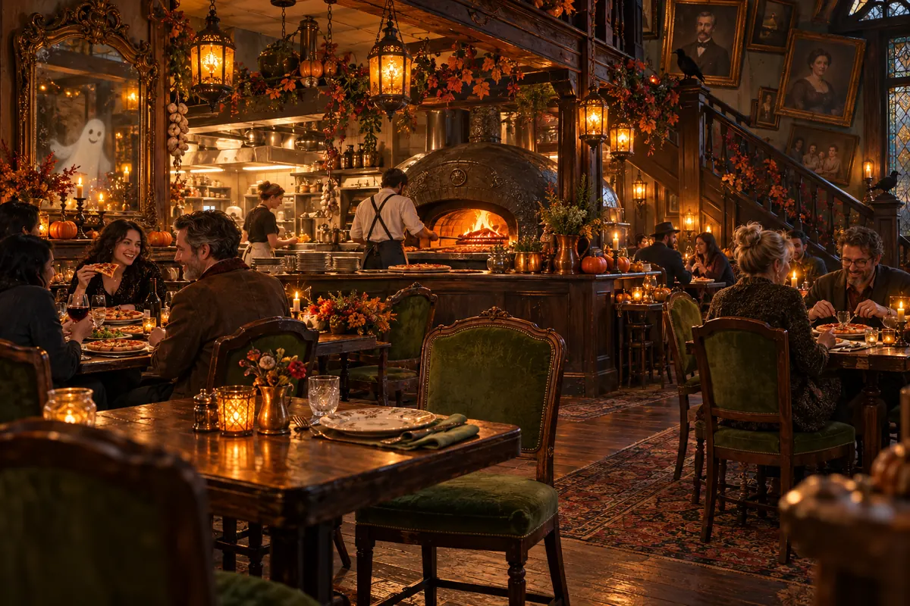
01 / FEED YOUR SOULTHE ORIGINAL HAUNT LOW SCARE
The haunted pizzeria
A wood-fired supper. An extra place setting. A family business with a very complicated seating chart.
Pull up a chairBone Appétit is a fictional destination. This guide describes an imagined 2026 season; it does not offer bookings, orders, or payments.

YOUR NEW FAVORITE WRONG TURN
Wood-fired pizza. Pumpkin-lit paths. A family business with an extra place setting and a rather loose approach to the guest register. Pull over and stay a spell.
ALL APPETITES WELCOME. EVEN THE LIVING.
NOT YOUR AVERAGE PIT STOP
Past the last sensible exit: a pizzeria, a pumpkin trail, and a counter full of disputed inventory. The family runs all three. The house supervises.

01 / FEED YOUR SOULA wood-fired supper. An extra place setting. A family business with a very complicated seating chart.
Pull up a chair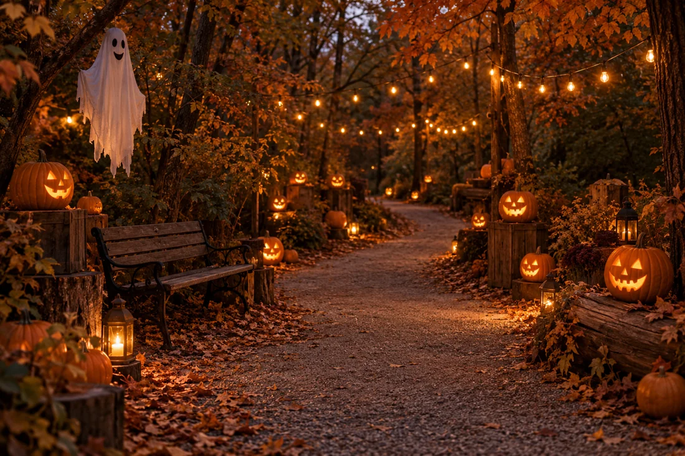
02 / TAKE THE LONG WAYA lantern-lit loop through our little patch of woods. All pumpkins have been briefed. Compliance varies.
Meet the residents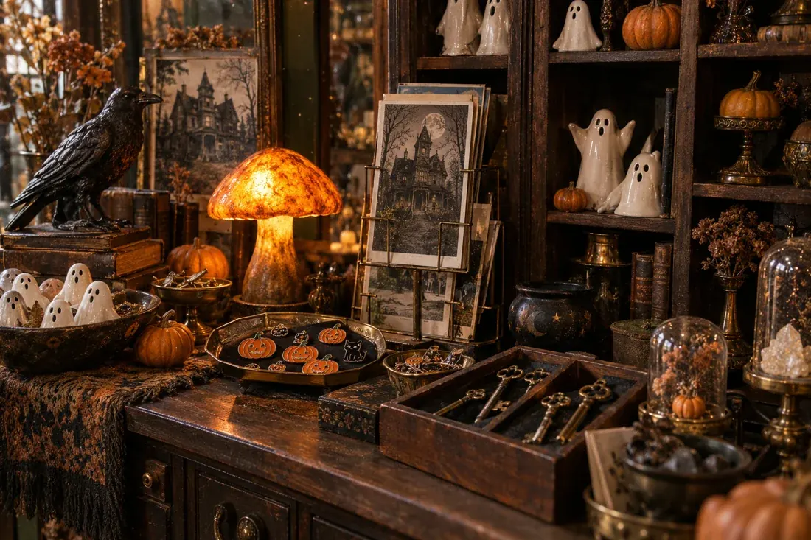
03 / CHECK THE INVENTORYSix things the family cannot quite account for. Shelf labels supplied. Explanations pending.
Have a little lookTHE ORIGINAL HAUNT / LOW SCARE
Find a table in the old house and watch the wood-fired oven earn its keep. We set one extra place, as the family has since 1893. You are welcome to ask who it is for. The portrait will refer you to management. Settle in for a proper meal, or split a pie before a wander. The haunt is gentle; the ghost peppers are not.
Concept access: step-free entrance, flexible table seating, a quieter corner, and no surprise character visits at your table.
TAKE THE LONG WAY / YOUR PACE
Follow the lanterns around a pumpkin patch maintained by Visitor Services, a department consisting of one rake and a handwritten rota. Before 6 pm, it’s a gentle woodland ramble. After 6 pm, the soundscape deepens and a few costumed residents come out to say hello. The pumpkins have been asked to remain in their assigned positions.
Concept access: firm, level surfacing, rest benches, and a shorter return path. No strobes, chasing, or touching. Real-world facilities have not been established.
DOUBTFUL INVENTORY / LOW SCARE
Some places keep a gift shop. We keep magnets with unresolved business. Browse six specimens from the family’s doubtful inventory: ceramic ghosts, old keys, postcards, a pumpkin pin, a returning magnet, and a raven from Accounts. The shelf labels record what we remember. None of it has survived an independent audit.
Concept access: a step-free counter with low display surfaces and space to browse slowly. The collection is for browsing only; curiosity is encouraged.
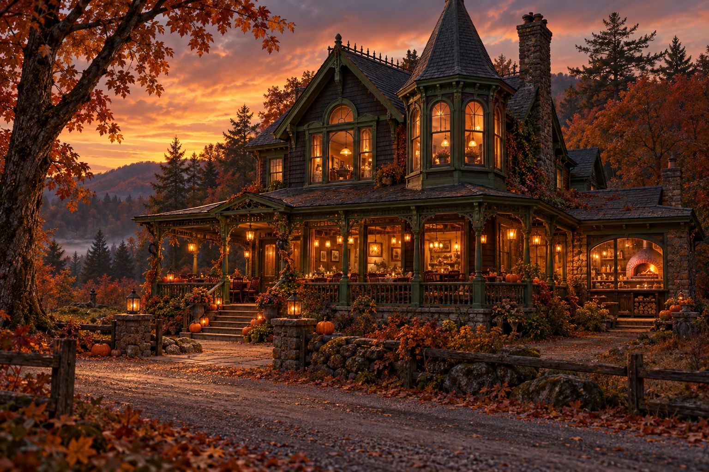
A FAMILY BUSINESS. MOSTLY LIVING.
EVERY OLD HOUSE HAS A STORY
The family has been in hospitality since 1893. The house has been in an advisory capacity for rather longer.
In 1893, the first Appétit family opened a roadside kitchen for travelers who’d lost their way. They set one extra place at the first supper. By closing time, the chair had moved. The plate was clean. Nobody put it on the bill.
A few generations later, the oven is hotter, the guest register is thicker, and the extra plate is still house business. We added a pumpkin trail. The house requested a management title. We compromised on a portrait.
Some traditions are worth keeping alive.
Others handle that themselves.
THE DEPARTMENT OF DOUBTFUL PROVENANCE
The family records what it remembers. The objects have declined to give statements. An imaginary counter collection; nothing here is for sale.
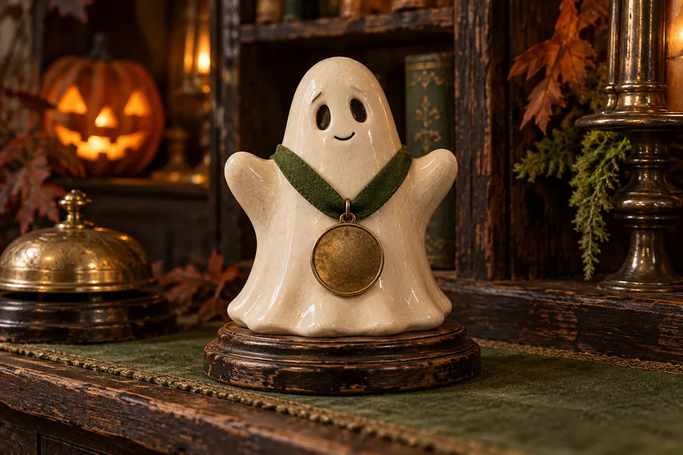
SPECIMEN 01Glazed ceramic · Outstanding attendance
Awarded in 1958. Still on the counter. The family has stopped asking when its shift ends.
Claimed originBeside the till, every Monday.
The building says it came with the staff. The staff say it came with the building. Neither has signed the inventory sheet.
Fictional object and provenance. No authenticity claim or purchase.
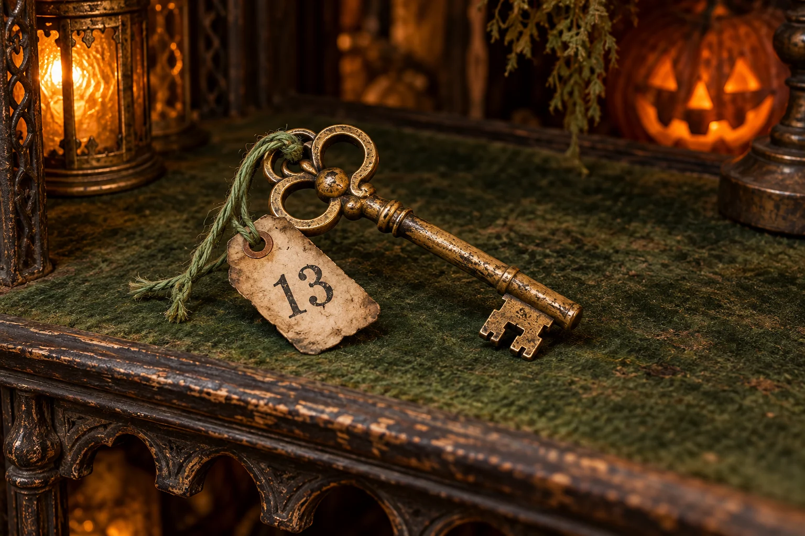
SPECIMEN 02Brass · Floor plan pending
The tag says Room 13. The floor plan stops at 12. Maintenance has filed this as a numbering issue.
Claimed originFront desk drawer, under “Do not file.”
Opens nothing we are currently advertising. A replacement lock has been ordered for a door we have not located.
Fictional object and provenance. No authenticity claim or purchase.
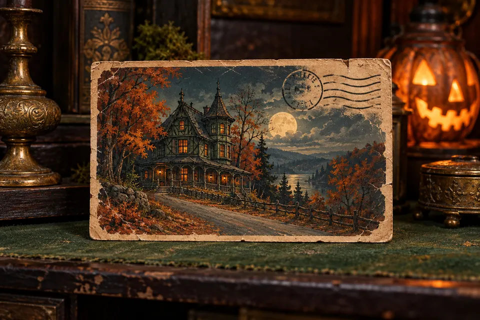
SPECIMEN 03Printed card · Delivery disputed
A cheerful view of the house, signed by someone who has not arrived. Postage is your department.
Claimed originThe outgoing post tray.
The date keeps getting ahead of the postmark. We have asked the sender to allow three to five business days.
Fictional object and provenance. No authenticity claim or purchase.
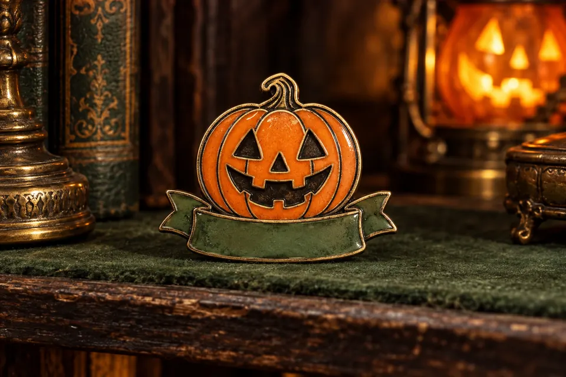
SPECIMEN 04Enamel pin · Guest registration
Issued to a pumpkin that requested a guided tour. It completed the feedback form. Mostly circles.
Claimed originGuest register, entry illegible.
Visitor Services would like its badge back. The pumpkin would like to speak to the person who carved it.
Fictional object and provenance. No authenticity claim or purchase.
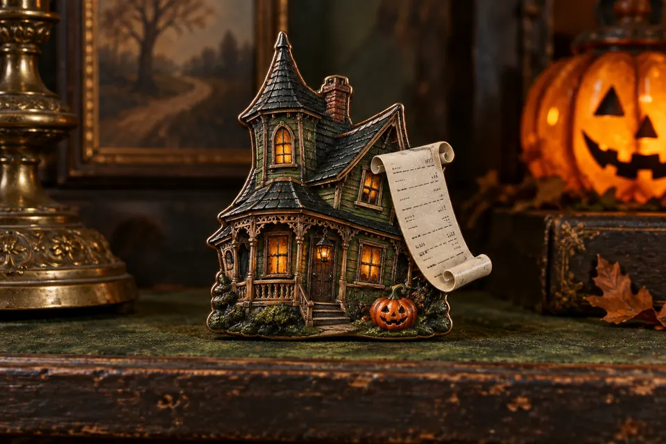
SPECIMEN 05Souvenir magnet · Strong attachment
Keeps returning to the invoice it came from. Excellent hold. Poor closure.
Claimed originGift-shop reorder, still marked “Returned.”
Removed from stock three times. Found on the purchase ledger four times. The discrepancy has been carried forward.
Fictional object and provenance. No authenticity claim or purchase.
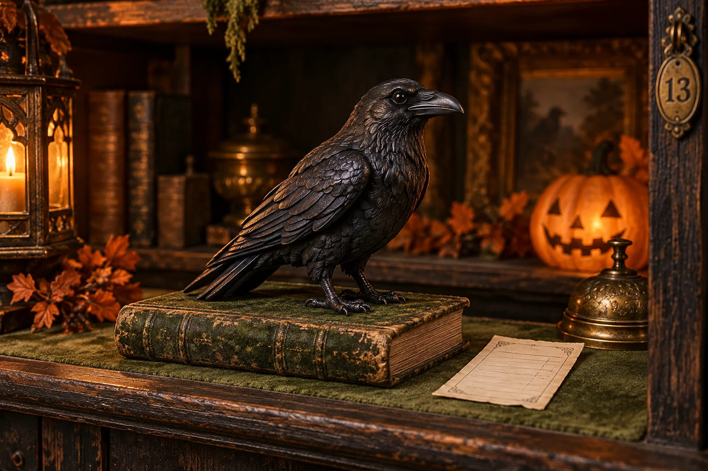
SPECIMEN 06Painted resin · Receipts retained
A small black raven guarding a very small ledger. Never promoted. Never off duty.
Claimed originThe ledger shelf, since before the ledger.
It has approved no expenses since 1893. It has also approved no explanation for the extra place setting.
Fictional object and provenance. No authenticity claim or purchase.
VISITOR SERVICES / DRAWING NO. 013
Find the house, follow the loop, or take the shorter return. All three are perfectly respectable plans.
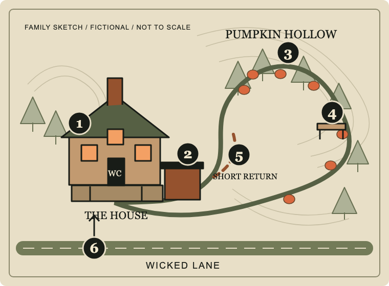
Supper, the extra place setting, and the imagined accessible restroom.
About 60 minutes · Food purchased separately
Beside the dining room. Six objects; several unanswered questions.
About 20 minutes · Free to browse
Follow the solid loop. Lanterns lead back toward the house.
About 30 minutes · $12 per guest age 5+
A pause beside the loop. Sitting down requires no explanation.
The dashed route leads back toward the house. Skip the long loop whenever you like.
Begin and return here. Visitor Services has made a note of it.
A fictional map, not to scale. Routes, surfacing, benches, and restroom access are imagined design intentions, not verified facilities or real directions.
PUT A LITTLE STRANGE ON THE CALENDAR
Bring your favorite people. Wear something ridiculous. Leave room for pizza. We’ll take care of the atmosphere.
LESS GUESSWORK. MORE GOOD TIMES.
Make the night your own. Here’s how the imagined experience is designed.
Spooky should be an invitation.
Take breaks. Skip a stop. Stay for a slice.
Think cozy Halloween movie, not an endurance test. The dining room and oddities counter are low-scare spaces. After dark, Pumpkin Hollow adds eerie soundscapes and costumed characters. No touching, chasing, or strobe lighting is part of this concept.
Absolutely. The golden hours, from 3–6 pm, are designed for families and anyone who likes their spooky on the gentle side. Children stay with their grown-ups, and children under 5 join the trail free.
The concept calls for a step-free dining room, accessible restroom, seating along the route, and a firm, level trail with a shorter return path. A quieter dining corner and a character-free daytime visit are part of the plan. These are design intentions for a fictional venue, not verified facilities.
No. In this concept, the pizzeria, grounds, and oddities counter are free to enter. Food, drinks, and the optional Pumpkin Hollow trail are priced separately. The oddities collection is for browsing only. The visit builder helps estimate a trip; it doesn’t sell tickets or reserve tables.
The pizzeria and oddities counter are indoors. The trail is outdoors and would close for unsafe weather. Bring a layer and shoes that don’t mind autumn. In the planner, you can skip the trail and still make a cozy evening of it.
The menu includes vegetarian pizzas, plain cheese pizza for small appetites, and nonalcoholic drinks. Ingredients and dietary tags are shown in the full menu. A real kitchen would need to confirm allergies and cross-contact precautions; no item here is represented as allergen-free.
THE ROAD LESS REASONABLE
Follow the glow. Bring an appetite.